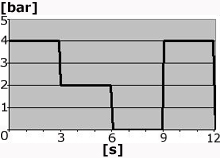

This test is used to determine whether the modulators function correctly and to check that the air lines are correctly installed.
Note:
The test should not be stopped during the cycle.
Test prerequisites:
Parking brake released.
The wheels must be chocked on the axle which is not lifted.
Engine speed 1000 rpm or constant air supply to the air system.
Procedure:
Release the parking brake.
Connect a pressure sensor calibrated for at least 12 bar to the test output on the modulator´s output. On the trailer unit modulator the connection is done to the trailer unit output.
Chock the wheels and lift up the appropriate wheel.
Activate the test for the relevant modulator and read the pressure value. The pressure must correspond to the pressure graph curve, see picture below.

The change in pressure must occur in less than 1 second. If it takes longer there may be pinched lines or blocked ventilation.
Check that the correct wheel is used during braking by trying to rotate the wheel.
When the test is completed, end the diagnostic session. Turn the ignition key to stop position and then back to driving position.